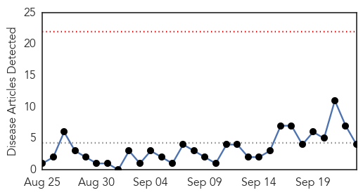

Ebola
30-Day Web Trend
0 alerts, 0 warnings
30-Day Twitter Trend
0 alerts, 0 warnings

Article Locations

Article Confidences

Top Articles:
- 1.000
- Some health experts say the USA hasn't learned key lessons from Ebola experience
- 1.000
- The most lethal Ebola strain yet can still be stopped
- 0.998
- Consolidated Support for Liberia's Recovery
- 0.998
- Guinea officials call on Canada to help expand Ebola vaccine program
- 0.998
- Up to 3 Ebola-infected travelers might fly each month
- 0.996
- Airlines strive to prevent spread of disease rather than cancel flights during outbreaks
- 0.996
- UN Ebola response now planned to continue into 2016
- 0.983
- Regeneron to make mAb Ebola drug for trials with BARDA backing
- 0.979
- Texas Ebola patient Thomas Eric Duncan dies
- 0.978
- AP Investigation Bungling by UN agency hurt Ebola response
- 0.971
- Ebola-hit countries get public health emergency coordination centers - Sierra Leone
- 0.930
- Liberia Is Not Just Ebola: Here’s What You Should Know
- 0.915
- Ghana, Business Advice, Jobs, News, Business Directory, Real Estate, Finance, Forms, Auto
- 0.911
- EVD Outbreak, its effect on the environment - Liberia
- 0.901
- Ebola survivors suffer complications
- 0.858
- Sierra Leone News: Kenya lifts flight ban on ebola-hit countries « Awoko Newspaper
- 0.773
- Kenya Airways Cleared For Direct Sierra Leone Flights To Its Network
- 0.737
- How can Africa tackle diseases affecting its populations?
- 0.718
- 16yo teen wins Google science prize, invents the world's fastest Ebola test -- Science & Technology -- Sott.net
- 0.648
- Orphans’ Future in Limbo
- 0.514
- Ebola widow, 6 orphans sleep in mishit ‘cook shop’
Top Tweets:
- 0.977
- Ebola lesson 3: Health care infection control is of critical importance to protect health care workers & prevent disease transmission.
- 0.782
- Ebola MERS SARS are indicator diseases- these show us what is happening silently all over the world w. every day spread of diseases.
- 0.779
- The West African Ebola outbreak has dispelled a number of beliefs about the disease. @LizSzabo outlines some. http://t.co/ZVZXShcRe7
- 0.744
- This week's Ebola update from is incredibly hard to decipher. But I think they are reporting only 2 new cases in Guinea. None in SL.
- 0.696
- Recent Ebola cases in Sierra Leone raises questions about how the disease is spreading & when the epidemic will end http://t.co/d7zCYPEk7B
- 0.678
- UN Ebola response now planned to continue into 2016 - U.S. News & World Report http://t.co/YoKH1AgSho ebola EVD
- 0.638
- Ebola lesson 2: When nat’l capacities are overwhelmed world must move immediately to combat emerging health threats.
- 0.625
- 284 Communities at the Epicenter of the Ebola Outbreak Remained Ebola-Free ... - Huffington Post http://t.co/kYT9rzXKRg
- 0.625
- 284 Communities at the Epicenter of the Ebola Outbreak Remained Ebola-Free - How Did That Happen? @theworldpost http://t.co/wPAl5hPR4F
- 0.607
- 16yo teen invents world's fastest Ebola test grabs Google science prize - RT http://t.co/uTiGq7Pv4z ebola EVD
- 0.565
- Learning From Ebola Mistakes North Texas Hospitals Make Changes - KERA News http://t.co/W4VsUN92Mr ebola EVD
- 0.558
- Shocker: WHO Totally Unprepared for Ebola Disaster - Christian Broadcasting Network http://t.co/GOb39oxtve ebola EVD
Cholera
30-Day Web Trend
0 alerts, 0 warnings

30-Day Twitter Trend
0 alerts, 0 warnings

Article Locations

Article Confidences

Top Articles:
Top Tweets:
-
No tweets found for Sep 23, 2015